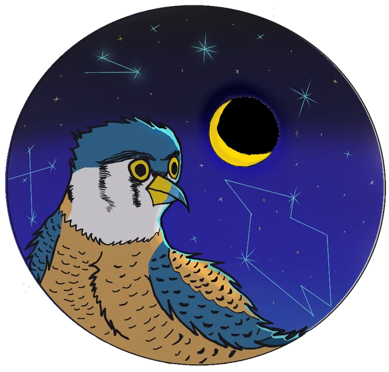

“A sabedoria é um círculo, o que recebemos devemos devolver”


Estudar no seu ritmo, sem perder o foco
A Galea é uma plataforma de cursos gamificados pensada para quem tem TDAH. As lições são curtas, cada passo tem uma recompensa e você sempre sabe qual é a próxima etapa.
Ganhe pontos de experiência, suba de nível, desbloqueie troféus e acompanhe seu progresso em trilhas claras. Errou? Sem problema: é só tentar de novo, no seu tempo.
Quem somos
A Galea nasceu como um Trabalho de Conclusão de Curso em Desenvolvimento de Sistemas, a partir de uma pergunta: como tornar o estudo mais leve para quem tem dificuldade de manter o foco?
Nossa resposta une cursos curtos, organizados em trilhas, a elementos de jogos como pontos, níveis e troféus, para que cada pequena conquista seja vista e comemorada. Aqui o ritmo é seu, sem pressa e sem punição.
